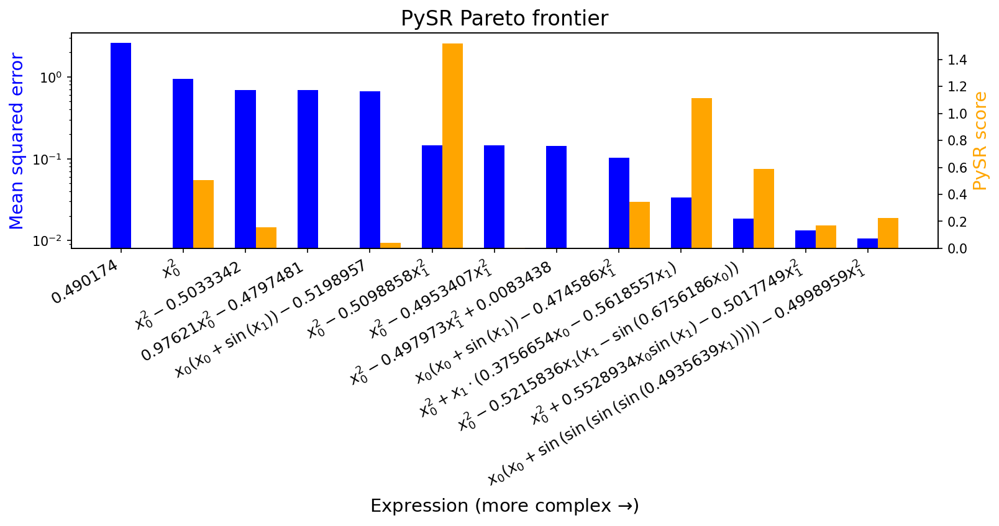
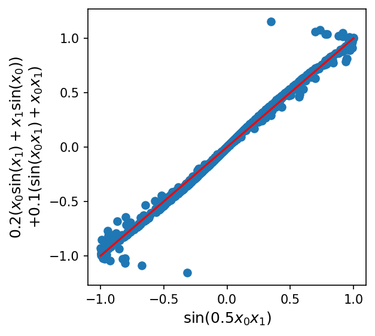

Introduction to Equation Discovery - Comparing Symbolic Regression Methods#
Upto now we have seen that the climate models we developed are using physical equations that are based on our understanding of the physical processes that govern the climate. However, these equations are often complex and difficult to solve, and they can only be used to model the climate at a coarse resolution.
Equation discovery is a different approach that uses machine learning to automatically discover equations that can be used to model the climate. Specifically, equation discovery in climate modeling can be used to:
Automate the process of developing subgrid parameterizations. Subgrid parameterizations are mathematical equations that are used to represent the effects of processes that are too small to be resolved by climate models. These equations are often complex and difficult to develop, but they can be automatically discovered using equation discovery.
Identify relationships between variables that are important for understanding climate change. Machine learning algorithms can learn from large datasets of climate data to identify relationships between variables that are important for understanding climate change.
Develop models that are more interpretable and that can be used to make better decisions about how to mitigate and adapt to climate change. Machine learning algorithms can generate equations that are easier to understand than traditional physical equations. This can help scientists and policymakers to understand how climate models work and to make better decisions about how to mitigate and adapt to climate change.
In this notebook, we’ll review some common techniques for Symbolic Regression (SR), a family of methods of discovering (simple) equations that relate inputs to outputs.
In particular, we’ll cover the following methods:
Symbolic regression based on Genetic Programming
Symbolic regression based on Manually Constructed Library + Sparse Regression
Brief overview of other techniques
%matplotlib inline
import matplotlib.pyplot as plt
import numpy as np
import pysindy as ps
from sklearn.linear_model import Lasso, LinearRegression
from sympy import Number, latex
from rvm import RVR
Data#
When explaining the methods, we’ll consider the following bivariate system:
Although the equation is relatively simple, discovering it from \(x_0\) and \(x_1\) directly is a bit tough, since the \(\sin\) term requires going at least three levels deep in term combinations, and also involves an inner multiplication by a constant (which not all symbolic regression frameworks support).
def toy_function(x):
x0 = x[:, 0]
x1 = x[:, 1]
return x0**2 - 0.5 * x1**2 + np.sin(0.5 * x0 * x1)
def contour(
f, lines=None, linewidths=6, alpha=0.9, linestyles="solid", label=None, **kw
):
grid = np.linspace(-4, 4, 150)
xyg = np.array(np.meshgrid(grid, grid))
X = xyg.reshape(2, -1).T
zg = f(X)
xg, yg = xyg
vlim = np.abs(zg).max()
plt.contourf(xg, yg, zg.reshape(xg.shape), 300, vmin=-vlim, vmax=vlim, cmap="bwr")
plt.colorbar(label=label)
x = np.random.normal(size=(1000, 2))
y = toy_function(x)
plt.figure(dpi=150)
contour(toy_function, label="Function value")
plt.title("Toy domain for illustrating\nsymbolic regression", fontsize=16)
plt.xlabel("$x_0$", fontsize=16)
plt.ylabel("$x_1$", fontsize=16)
plt.show()

Genetic Programming#
Genetic programming is a classic technique in AI, and interest in the idea dates back at least to Alan Turing (who proposes the idea in the same paper that introduces the imitation game, or Turing test).
The general idea is to have a:
“Population” of programs (in our case, possible symbolic expressions, usually represented as trees)
Some notion of individual “fitness” (in our case, how well they model the data, as well as their simplicity)
Some means of applying random “mutations” (e.g. adding a term, deleting a term)

Fig. 6 Some examples for different mutation types#
“Crossover” and “subtree” mutations combine features from multiple candidate equations, imitating the process of genetic recombination from sexual reproduction. “Hoist” and “point” mutations modify individual equations, imitating the process of genetic mutation from, e.g., random errors in DNA replication.
Specific mutations aside, programs can have a limited lifespan, and those with high “fitness” produce more “offspring” (possibly-mutated versions of themselves). However, everything is probabilistic, so programs with lower fitness can still persist. This is critically important, because it allows genetic programming to overcome local minima during optimization.
Note that although genetic programming can be a robust way to solve extremely difficult non-convex optimization problems (as perhaps evidenced by life itself), it also tends to be slow and resource-intensive.
gplearn#
One nicely-documented library for “pure” genetic programming-based symbolic regression is gplearn, which provides a scikit-learn style API and a number of configuration options:
Run gplearn#
import gplearn
import gplearn.genetic
gplearn_sr = gplearn.genetic.SymbolicRegressor(
population_size=5000,
generations=50,
p_crossover=0.7,
p_subtree_mutation=0.1,
p_hoist_mutation=0.05,
p_point_mutation=0.1,
max_samples=0.9,
verbose=1,
parsimony_coefficient=0.01,
function_set=("add", "mul", "sin"),
)
gplearn_sr.fit(x, y)
| Population Average | Best Individual |
---- ------------------------- ------------------------------------------ ----------
Gen Length Fitness Length Fitness OOB Fitness Time Left
0 17.93 1.47196 3 0.53161 0.767267 2.25m
1 7.16 1.04141 15 0.46614 0.551357 1.79m
2 6.05 0.984073 16 0.438842 0.450432 1.64m
3 3.49 0.844226 6 0.498132 0.674921 1.52m
4 3.56 0.842085 6 0.489569 0.751986 1.45m
5 3.95 0.861431 11 0.456676 0.378522 1.45m
6 4.62 0.861843 10 0.295864 0.335496 1.50m
7 5.38 0.86325 10 0.291627 0.37363 1.46m
8 5.44 0.812903 10 0.29433 0.349302 1.41m
9 6.28 0.804555 18 0.273818 0.253811 1.44m
10 9.23 0.851866 17 0.236709 0.200122 1.43m
11 10.05 0.884839 10 0.269513 0.284675 1.41m
12 9.80 0.884015 10 0.268325 0.295369 1.41m
13 9.32 0.85389 10 0.263657 0.337384 1.30m
14 9.27 0.855159 10 0.262901 0.344187 1.26m
15 9.73 0.90986 10 0.261336 0.358273 1.29m
16 9.80 0.911413 10 0.261331 0.358316 1.23m
17 9.45 0.890892 9 0.262321 0.373625 1.16m
18 8.96 0.867168 9 0.261843 0.356653 1.14m
19 9.14 0.860114 9 0.261507 0.359677 1.06m
20 8.96 0.864602 9 0.261133 0.363041 1.02m
21 9.11 0.857208 9 0.261368 0.360925 1.03m
22 9.02 0.858776 9 0.261709 0.357859 57.03s
23 9.00 0.84948 9 0.261599 0.358847 55.05s
24 9.02 0.849401 9 0.263431 0.34236 53.25s
25 8.98 0.850555 9 0.262627 0.349595 52.64s
26 9.03 0.866678 9 0.260604 0.367805 49.00s
27 9.00 0.843648 9 0.261159 0.362807 46.81s
28 9.05 0.858613 9 0.260985 0.364375 46.36s
29 9.06 0.845232 9 0.262094 0.354397 42.63s
30 8.96 0.845907 9 0.261995 0.355283 40.38s
31 8.92 0.84241 9 0.259467 0.378034 39.79s
32 8.99 0.84803 9 0.261297 0.361561 36.17s
33 8.99 0.851543 9 0.260148 0.371908 34.24s
34 9.10 0.845365 9 0.26048 0.368918 33.40s
35 9.02 0.847575 9 0.261257 0.361923 30.03s
36 9.02 0.85915 9 0.262388 0.351749 27.79s
37 8.98 0.854449 9 0.260841 0.365668 26.83s
38 8.97 0.854358 9 0.263345 0.343136 23.45s
39 8.94 0.854131 15 0.247774 0.230227 21.40s
40 9.04 0.845251 9 0.259741 0.375572 20.15s
41 9.01 0.856964 9 0.262092 0.354415 17.18s
42 8.99 0.848607 16 0.246265 0.289062 15.06s
43 8.96 0.848734 9 0.262765 0.348356 13.33s
44 9.00 0.860011 9 0.261644 0.35844 10.76s
45 8.99 0.862024 9 0.260693 0.367 8.64s
46 8.96 0.857704 9 0.262779 0.348229 6.72s
47 9.02 0.843545 9 0.259616 0.376695 4.29s
48 9.04 0.854273 9 0.260164 0.37176 2.15s
49 9.01 0.858164 9 0.259924 0.373921 0.00s
add(mul(X0, X0), mul(-0.501, mul(X1, X1)))In a Jupyter environment, please rerun this cell to show the HTML representation or trust the notebook.
On GitHub, the HTML representation is unable to render, please try loading this page with nbviewer.org.
add(mul(X0, X0), mul(-0.501, mul(X1, X1)))
Interpret results#
print(gplearn_sr._program)
add(mul(X0, X0), mul(-0.501, mul(X1, X1)))
This looks very close to the right answer, though the constants are slightly off.
[const for const in gplearn_sr._program.program if isinstance(const, float)]
[-0.5008793972494787]
This is likely because gplearn mutations which add or update constants always pick values by drawing random uniform values (within pre-specified ranges, by default -1 to 1). In my limited experience so far, this is one of the major inefficiencies.
PySR#
PySR is a different library for symbolic regression which, though still based on genetic programming, includes simulated annealing and gradient-free optimization to set the values of constants as well as performance improvements (although accessible via a Python API, the main library is written in Julia for speed). This seems to make it a bit more reliable and precise.
Run PySR#
import pysr
equations = pysr.PySRRegressor(
niterations=5,
binary_operators=["+", "*"], # operators that can combine two terms
unary_operators=["sin"], # operators that modify a single term
)
equations.fit(x, y)
Compiling Julia backend...
Started!
PySRRegressor.equations_ = [ pick score equation \ 0 0.000000 0.490174 1 0.505142 (x0 * x0) 2 0.156187 ((x0 * x0) + -0.50333416) 3 0.000819 (((x0 * 0.97621) * x0) + -0.47974813) 4 0.038853 (((x0 + sin(x1)) * x0) + -0.5198957) 5 1.520095 ((x0 * x0) + (-0.50988585 * (x1 * x1))) 6 0.004761 ((x0 * x0) + (sin(-0.518227) * (x1 * x1))) 7 0.000325 ((x0 * x0) + ((-0.49797305 * (x1 * x1)) + 0.00... 8 0.342919 ((x0 * (x0 + sin(x1))) + (-0.47458595 * (x1 * ... 9 1.114796 ((x0 * x0) + ((((-1.495628 * x1) + x0) * 0.375... 10 0.588078 ((x0 * x0) + (-0.5215836 * (x1 * (x1 + sin(-0.... 11 0.169770 ((x0 * x0) + (-0.5017749 * ((x1 * x1) + ((-1.1... 12 >>>> 0.226393 ((x0 * (x0 + sin(sin(sin(sin(x1 * 0.49356386))... loss complexity 0 2.593729 1 1 0.944418 3 2 0.691037 5 3 0.689906 7 4 0.663615 8 5 0.145127 9 6 0.144437 10 7 0.144390 11 8 0.102473 12 9 0.033609 13 10 0.018666 14 11 0.013292 16 12 0.010599 17 ]In a Jupyter environment, please rerun this cell to show the HTML representation or trust the notebook.
On GitHub, the HTML representation is unable to render, please try loading this page with nbviewer.org.
PySRRegressor.equations_ = [ pick score equation \ 0 0.000000 0.490174 1 0.505142 (x0 * x0) 2 0.156187 ((x0 * x0) + -0.50333416) 3 0.000819 (((x0 * 0.97621) * x0) + -0.47974813) 4 0.038853 (((x0 + sin(x1)) * x0) + -0.5198957) 5 1.520095 ((x0 * x0) + (-0.50988585 * (x1 * x1))) 6 0.004761 ((x0 * x0) + (sin(-0.518227) * (x1 * x1))) 7 0.000325 ((x0 * x0) + ((-0.49797305 * (x1 * x1)) + 0.00... 8 0.342919 ((x0 * (x0 + sin(x1))) + (-0.47458595 * (x1 * ... 9 1.114796 ((x0 * x0) + ((((-1.495628 * x1) + x0) * 0.375... 10 0.588078 ((x0 * x0) + (-0.5215836 * (x1 * (x1 + sin(-0.... 11 0.169770 ((x0 * x0) + (-0.5017749 * ((x1 * x1) + ((-1.1... 12 >>>> 0.226393 ((x0 * (x0 + sin(sin(sin(sin(x1 * 0.49356386))... loss complexity 0 2.593729 1 1 0.944418 3 2 0.691037 5 3 0.689906 7 4 0.663615 8 5 0.145127 9 6 0.144437 10 7 0.144390 11 8 0.102473 12 9 0.033609 13 10 0.018666 14 11 0.013292 16 12 0.010599 17 ]
Interpret results#
def round_expr(expr, num_digits=4):
return expr.xreplace({n: round(n, num_digits) for n in expr.atoms(Number)})
round_expr(equations.sympy())
It looks like PySR is able to not only discover the correct equation, but also format it for us nicely.
In addition, it saves a Pareto frontier of possible expressions of varying complexities, which had the lowest error of any other equations of equal or lesser complexity (with a configurable trade-off rule):
equations.equations_
| complexity | loss | score | equation | sympy_format | lambda_format | |
|---|---|---|---|---|---|---|
| 0 | 1 | 2.593729 | 0.000000 | 0.490174 | 0.490174000000000 | PySRFunction(X=>0.490174000000000) |
| 1 | 3 | 0.944418 | 0.505142 | (x0 * x0) | x0**2 | PySRFunction(X=>x0**2) |
| 2 | 5 | 0.691037 | 0.156187 | ((x0 * x0) + -0.50333416) | x0**2 - 0.50333416 | PySRFunction(X=>x0**2 - 0.50333416) |
| 3 | 7 | 0.689906 | 0.000819 | (((x0 * 0.97621) * x0) + -0.47974813) | 0.97621*x0**2 - 0.47974813 | PySRFunction(X=>0.97621*x0**2 - 0.47974813) |
| 4 | 8 | 0.663615 | 0.038853 | (((x0 + sin(x1)) * x0) + -0.5198957) | x0*(x0 + sin(x1)) - 0.5198957 | PySRFunction(X=>x0*(x0 + sin(x1)) - 0.5198957) |
| 5 | 9 | 0.145127 | 1.520095 | ((x0 * x0) + (-0.50988585 * (x1 * x1))) | x0**2 - 0.50988585*x1**2 | PySRFunction(X=>x0**2 - 0.50988585*x1**2) |
| 6 | 10 | 0.144437 | 0.004761 | ((x0 * x0) + (sin(-0.518227) * (x1 * x1))) | x0**2 - 0.49534071426594*x1**2 | PySRFunction(X=>x0**2 - 0.49534071426594*x1**2) |
| 7 | 11 | 0.144390 | 0.000325 | ((x0 * x0) + ((-0.49797305 * (x1 * x1)) + 0.00... | x0**2 - 0.49797305*x1**2 + 0.008343818 | PySRFunction(X=>x0**2 - 0.49797305*x1**2 + 0.0... |
| 8 | 12 | 0.102473 | 0.342919 | ((x0 * (x0 + sin(x1))) + (-0.47458595 * (x1 * ... | x0*(x0 + sin(x1)) - 0.47458595*x1**2 | PySRFunction(X=>x0*(x0 + sin(x1)) - 0.47458595... |
| 9 | 13 | 0.033609 | 1.114796 | ((x0 * x0) + ((((-1.495628 * x1) + x0) * 0.375... | x0**2 + x1*(0.3756654*x0 - 0.5618556908712*x1) | PySRFunction(X=>x0**2 + x1*(0.3756654*x0 - 0.5... |
| 10 | 14 | 0.018666 | 0.588078 | ((x0 * x0) + (-0.5215836 * (x1 * (x1 + sin(-0.... | x0**2 - 0.5215836*x1*(x1 - sin(0.67561865*x0)) | PySRFunction(X=>x0**2 - 0.5215836*x1*(x1 - sin... |
| 11 | 16 | 0.013292 | 0.169770 | ((x0 * x0) + (-0.5017749 * ((x1 * x1) + ((-1.1... | x0**2 + 0.55289336846997*x0*sin(x1) - 0.501774... | PySRFunction(X=>x0**2 + 0.55289336846997*x0*si... |
| 12 | 17 | 0.010599 | 0.226393 | ((x0 * (x0 + sin(sin(sin(sin(x1 * 0.49356386))... | x0*(x0 + sin(sin(sin(sin(0.49356386*x1))))) - ... | PySRFunction(X=>x0*(x0 + sin(sin(sin(sin(0.493... |
equations.equations_.loss
0 2.593729
1 0.944418
2 0.691037
3 0.689906
4 0.663615
5 0.145127
6 0.144437
7 0.144390
8 0.102473
9 0.033609
10 0.018666
11 0.013292
12 0.010599
Name: loss, dtype: float64
plt.figure(figsize=(12, 3), dpi=150)
plt.bar(
np.arange(len(equations.equations_)),
equations.equations_.loss,
width=0.33,
color="blue",
)
plt.yscale("log")
plt.ylabel("Mean squared error", fontsize=14, color="blue")
plt.xticks(
range(len(equations.equations_)),
[f"${latex(round_expr(v,7))}$" for v in equations.equations_.sympy_format],
rotation=30,
ha="right",
fontsize=12,
)
plt.title("PySR Pareto frontier", fontsize=16)
plt.xlabel("Expression (more complex $\\to$)", fontsize=14)
ax2 = plt.twinx()
ax2.bar(
np.arange(len(equations.equations_)) + 0.33,
equations.equations_.score,
width=0.33,
color="orange",
)
ax2.set_ylabel("PySR score", color="orange", fontsize=14)
plt.show()

Manually Constructed Library + Sparse Regression#
Another approach to performing symbolic regression is to
Hand-construct a library of basis functions (e.g. by recursively combining all terms with various operations)
Run sparse linear regression to extract a small set of basis functions
This approach works well for problems where any constants in the underlying formula can be extracted out to the outermost level (so they can be determined by linear regression). It also works well when we have domain knowledge about which terms could potentially appear in the final sum.
It does not work well in cases where constants can’t be pulled outside certain operations (e.g. in this case, with the sine operator, though powers and derivatives are generally fine). This method can also struggle when basis function values are highly correlated, though it depends on the sparse regression method.
Let’s create an augmentation function which takes an array of features and adds additional basis functions by combining them with binary multiplication and unary sine operations:
def augment(feats, names):
existing = set(names)
new_feats = []
new_names = []
for i in range(feats.shape[1]):
name = f"sin({names[i]})"
if name not in existing:
new_feats.append(np.sin(feats[:, i]))
new_names.append(name)
for j in range(i, feats.shape[1]):
name = f"mul({names[i]}, {names[j]})"
if name not in existing:
new_feats.append(feats[:, i] * feats[:, j])
new_names.append(name)
return np.hstack((feats, np.array(new_feats).T)), names + new_names
def repeatedly_augment(feats, names=None, depth=2):
if names is None:
names = [f"x{i}" for i in range(len(feats))]
for _ in range(depth):
feats, names = augment(feats, names)
return feats, names
feats, names = repeatedly_augment(np.array(x), ["x0", "x1"], depth=2)
Applying this twice brings us from 2 features up to 37:
feats.shape
(1000, 37)
We can see that the complexity of this approach starts to blow up exponentially, though, as we increase the maximum depth of an expression:
augment(feats, names)[0].shape
(1000, 742)
augment(*augment(feats, names))[0].shape
(1000, 276397)
If we need arbitrary polynomials of up to 4th order, we end up with orders of magnitude more features than samples, which will cause problems.
Note that since this method lacks the ability to apply operations with constants within other operations, \(\sin(0.5 x_0 x_1)\) isn’t present in any of these possible sets, though \(\sin(x_0 x_1)\) is.
Let’s now see how different methods for (sparse) linear regression perform on this task:
def learned_expr(coef, names, cutoff=1e-2):
coef_idx = np.argwhere(np.abs(coef) > cutoff)[:, 0]
sort_order = reversed(np.argsort(np.abs(coef[coef_idx])))
return " + ".join(
[f"{coef[coef_idx[i]]:.4f}*{names[coef_idx[i]]}" for i in sort_order]
)
Linear regression#
We can start with completely unregularized linear regression, which will find the linear combination of basis terms that minimizes mean squared error (to high precision, due to the convexity of the problem and an analytic way of solving it).
linreg = LinearRegression()
linreg.fit(feats, y)
learned_expr(linreg.coef_, names)
'0.9827*mul(x0, x0) + -0.8513*mul(sin(x0), sin(x1)) + 0.7112*mul(x1, sin(x0)) + 0.6925*mul(x0, sin(x1)) + -0.4685*mul(x1, x1) + 0.4400*x0 + -0.3905*sin(x0) + -0.3005*x1 + 0.2568*sin(x1) + -0.0972*mul(x0, x1) + -0.0509*sin(sin(x0)) + -0.0455*mul(x0, mul(x0, x0)) + 0.0440*sin(sin(x1)) + -0.0426*mul(x1, sin(x1)) + 0.0368*sin(mul(x0, x1)) + -0.0332*mul(sin(x0), mul(x0, x0)) + 0.0310*mul(x1, mul(x1, x1)) + 0.0236*mul(x0, sin(x0)) + 0.0234*mul(sin(x1), mul(x1, x1)) + -0.0177*mul(mul(x0, x1), mul(x1, x1)) + -0.0153*mul(mul(x0, x0), mul(x0, x1))'
Unfortunately, this doesn’t seem to give us a very sparse solution in this case.
L1-regularized linear regression (LASSO)#
A common way to make linear regression return more sparse solutions is to minimize a linear combination of the mean squared error and the sum of the magnitudes of the weights. This is called applying an “L1 penalty” since it is the L1-norm of the weight vector, and is also referred to as the “Least Absolute Shrinkage and Selection Operator”, or LASSO. From a Bayesian perspective, this corresponds to doing Bayesian linear regression with a Laplace or double-exponential prior on the weights.
Note that although this penalty does tend to encourage sparsity, it’s also meant as a regularizer, which can help with the presence of noise.
lasso = Lasso(alpha=0.01)
lasso.fit(feats, y)
learned_expr(lasso.coef_, names)
'0.9797*mul(x0, x0) + -0.4764*mul(x1, x1) + 0.1795*mul(x0, x1) + 0.1770*sin(mul(x0, x1)) + 0.1006*mul(x0, sin(x1)) + 0.0744*mul(x1, sin(x0))'
Here, LASSO ends up doing a pretty good job finding the first two terms of the ground-truth model (\(x_0^2 - 0.5x_1^2\)), with an approximation of the remaining \(\sin(0.5 x_0 x_1)\) term as \( 0.2(x_0\sin(x_1)+x_1\sin(x_0)) + 0.1(\sin(x_0 x_1) + x_0x_1)\):
plt.figure(figsize=(4, 4), dpi=150)
x0 = x[:, 0]
x1 = x[:, 1]
sin = np.sin
plt.scatter(
sin(0.5 * x0 * x1),
0.2 * (x0 * sin(x1) + x1 * sin(x0)) + 0.1 * (sin(x0 * x1) + x0 * x1),
)
plt.plot([-1, 1], [-1, 1], color="red")
plt.xlabel(r"$\sin(0.5 x_0 x_1)$", fontsize=12)
plt.ylabel(
r"$0.2(x_0\sin(x_1)+x_1\sin(x_0))$" + "\n" + r"$+ 0.1(\sin(x_0 x_1) + x_0x_1)$",
fontsize=12,
)
plt.show()

Relevance vector machines (RVM)#
Relevance vector machines, used by Zanna and Bolton 2020 for equation discovery, provide another way of learning sparse linear models in a Bayesian manner, though with a different prior that prioritizes sparsity over shrinkage when the data permits it. RVMs can also be used with a kernel trick to learn nonlinear decision boundaries which are sparse in a kernelized feature space, though in this case, we use a linear kernel on top of our manually computed library features.
rvm = RVR(verbose=False)
rvm.fit(feats, y, names)
learned_expr(rvm.m_, rvm.labels)
'1.0001*mul(x0, x0) + -0.8549*mul(sin(x0), sin(x1)) + 0.6970*mul(x0, sin(x1)) + 0.6964*mul(x1, sin(x0)) + -0.4895*mul(x1, x1) + -0.0862*mul(x0, x1) + 0.0386*sin(mul(x0, x1)) + 0.0200*sin(sin(x0)) + -0.0198*sin(x0) + -0.0172*mul(mul(x0, x1), mul(x1, x1)) + -0.0171*mul(mul(x0, x0), mul(x0, x1)) + -0.0122*mul(x1, sin(x1))'
RVM does discover the \(x_0^2\) and \(-0.5x_1^2\) terms almost exactly, but ends up with an even more complex approximate expression for the missing \(\sin(0.5x_0x_1)\) term.
Sequentially Thresholded Least Squares (STLSQ) from pysindy#
The PySINDy library provides a number of efficient Python implementations of sparse regression algorithms. Their default regression method is sequentially thresholded least squares (STLSQ), which (as its name might suggest) repeatedly runs L2-regularized linear regression with penalty strength alpha and prunes features with weight magnitudes below a given threshold.
stlsq = ps.optimizers.stlsq.STLSQ(alpha=0.0001, threshold=0.1)
stlsq.fit(feats, y)
learned_expr(stlsq.coef_[0], names)
'0.9970*mul(x0, x0) + -0.4991*mul(x1, x1) + 0.3064*mul(x0, sin(x1)) + 0.2842*mul(x1, sin(x0))'
This method ends up finding a sparser solution than Lasso, though I did tweak the parameters a bit to make that happen :)
It’s worth checking out PySINDy’s full suite of sparse regression methods for other approaches!
Overall, all of these methods were able to find the \(x_0^2\) and \(-0.5x_1^2\) terms, but all of them also needed to find approximations for the remaining term because it wasn’t in the feature library. Meaning the expressions are both less accurate and more complex.
Tweaking the Feature Library#
Now, we can potentially resolve some of these issues by pre-multiplying \(x_1\) by 0.5 before the augmentation process (which we’ll call \(x_{1h}\)).
feats2 = np.array(x)
feats2[:, 1] = feats2[:, 1] * 0.5
names2 = ["x0", "x1h"]
depth = 2
for _ in range(depth):
feats2, names2 = augment(feats2, names2)
In this case, the correct model should be expressed as
which is now a linear combination of our basis terms. Let’s see if these regression techniques can find it:
linreg = LinearRegression()
linreg.fit(feats2, y)
learned_expr(linreg.coef_, names2)
'-2.0000*mul(x1h, x1h) + 1.0000*sin(mul(x0, x1h)) + 1.0000*mul(x0, x0)'
lasso = Lasso(alpha=0.01)
lasso.fit(feats2, y)
learned_expr(lasso.coef_, names2)
'-1.8065*mul(x1h, x1h) + 0.9757*mul(x0, x0) + 0.8601*sin(mul(x0, x1h)) + -0.0823*mul(mul(x1h, x1h), mul(x1h, x1h)) + 0.0358*mul(x0, x1h)'
rvm = RVR(verbose=False)
rvm.fit(feats2, y, names2)
learned_expr(rvm.m_, rvm.labels)
'-2.0000*mul(x1h, x1h) + 1.0000*sin(mul(x0, x1h)) + 1.0000*mul(x0, x0)'
stlsq = ps.optimizers.stlsq.STLSQ(alpha=0.0001, threshold=0.1)
stlsq.fit(feats2, y)
learned_expr(stlsq.coef_[0], names2)
'-2.0000*mul(x1h, x1h) + 1.0000*mul(x0, x0) + 1.0000*sin(mul(x0, x1h))'
In this case, every method except Lasso finds the true model exactly (which held true across many choices of regularization parameter).
Handling noise#
What if we add noise to the data?
noise = np.random.normal(size=feats2.shape) * 0.01
linreg = LinearRegression()
linreg.fit(feats2 + noise, y)
learned_expr(linreg.coef_, names2)
'0.9570*sin(mul(x0, x1h)) + 0.8384*mul(x0, x0) + -0.6192*mul(sin(x1h), sin(x1h)) + -0.5196*mul(x1h, x1h) + -0.4770*mul(x1h, sin(x1h)) + -0.3601*sin(mul(x1h, x1h)) + -0.3404*mul(mul(x1h, x1h), mul(x1h, x1h)) + 0.2642*mul(x0, sin(x0)) + 0.1206*mul(x1h, sin(x0)) + -0.1205*mul(sin(x0), sin(x0)) + 0.0488*x1h + 0.0482*mul(mul(x0, x0), mul(x1h, x1h)) + -0.0474*mul(mul(x0, x1h), mul(x0, x1h)) + -0.0377*mul(sin(x1h), mul(x1h, x1h)) + -0.0335*mul(sin(x0), sin(x1h)) + -0.0322*mul(x0, x1h) + -0.0319*sin(sin(x1h)) + -0.0258*x0 + 0.0249*mul(x0, mul(x1h, x1h)) + 0.0188*sin(x0) + 0.0179*mul(x1h, mul(x1h, x1h)) + 0.0166*mul(mul(x0, x0), mul(x0, x0)) + -0.0160*mul(x1h, mul(x0, x1h)) + -0.0146*mul(mul(x0, x1h), mul(x1h, x1h)) + -0.0137*sin(x1h) + 0.0127*mul(x1h, mul(x0, x0)) + -0.0116*mul(x0, mul(x0, x1h))'
lasso = Lasso(alpha=0.01)
lasso.fit(feats2 + noise, y)
learned_expr(lasso.coef_, names2)
'-1.7971*mul(x1h, x1h) + 0.9749*mul(x0, x0) + 0.8571*sin(mul(x0, x1h)) + -0.0892*mul(mul(x1h, x1h), mul(x1h, x1h)) + 0.0374*mul(x0, x1h)'
rvm = RVR(verbose=False)
rvm.fit(feats2 + noise, y, names2)
learned_expr(rvm.m_, rvm.labels)
'0.9714*sin(mul(x0, x1h)) + 0.8647*mul(x0, x0) + -0.6275*mul(sin(x1h), sin(x1h)) + -0.5062*mul(x1h, x1h) + -0.4710*mul(x1h, sin(x1h)) + -0.3692*sin(mul(x1h, x1h)) + -0.3443*mul(mul(x1h, x1h), mul(x1h, x1h)) + 0.2223*mul(x0, sin(x0)) + -0.1007*mul(sin(x0), sin(x0)) + 0.0309*mul(x1h, sin(x0)) + 0.0139*mul(mul(x0, x0), mul(x0, x0))'
stlsq = ps.optimizers.stlsq.STLSQ(alpha=0.0001, threshold=0.1)
stlsq.fit(feats2 + noise, y)
learned_expr(stlsq.coef_[0], names2)
'0.9998*mul(x0, x0) + 0.9978*sin(mul(x0, x1h)) + -0.6494*mul(sin(x1h), sin(x1h)) + -0.5103*mul(x1h, x1h) + -0.4736*mul(x1h, sin(x1h)) + -0.3494*sin(mul(x1h, x1h)) + -0.3407*mul(mul(x1h, x1h), mul(x1h, x1h))'
In this case, it actually becomes Lasso which gets closest to the true model (i.e. is the only regression technique whose first three leading terms match the ground-truth model). This reversal illustrates how noise can strongly impact the effectiveness of different methods for learning symbolic models.
Let’s see how genetic programming-based techniques deal with noise.
noisy_equations = pysr.PySRRegressor(
niterations=5,
binary_operators=["+", "*"], # operators that can combine two terms
unary_operators=["sin"], # operators that modify a single term
)
noisy_equations.fit(x, y + np.random.normal(size=y.shape));
Started!
noisy_equations.equations_
| complexity | loss | score | equation | sympy_format | lambda_format | |
|---|---|---|---|---|---|---|
| 0 | 1 | 3.582840 | 0.000000 | 0.50338763 | 0.503387630000000 | PySRFunction(X=>0.503387630000000) |
| 1 | 3 | 1.823430 | 0.337718 | (x0 * x0) | x0**2 | PySRFunction(X=>x0**2) |
| 2 | 5 | 1.582934 | 0.070720 | ((x0 * x0) + -0.49039882) | x0**2 - 0.49039882 | PySRFunction(X=>x0**2 - 0.49039882) |
| 3 | 7 | 1.581517 | 0.000448 | (((x0 + 0.042415) * x0) + -0.51387835) | x0*(x0 + 0.042415) - 0.51387835 | PySRFunction(X=>x0*(x0 + 0.042415) - 0.51387835) |
| 4 | 8 | 1.581025 | 0.000311 | (((x0 + 0.044245645) * x0) + sin(-0.51387835)) | x0*(x0 + 0.044245645) - 0.491558375580128 | PySRFunction(X=>x0*(x0 + 0.044245645) - 0.4915... |
| 5 | 9 | 1.044294 | 0.414732 | ((x1 + x0) * (x0 + (-0.5658118 * x1))) | (x0 - 0.5658118*x1)*(x0 + x1) | PySRFunction(X=>(x0 - 0.5658118*x1)*(x0 + x1)) |
| 6 | 10 | 1.042686 | 0.001541 | ((x1 + x0) * (x0 + (sin(-0.5784448) * x1))) | (x0 - 0.546722407865012*x1)*(x0 + x1) | PySRFunction(X=>(x0 - 0.546722407865012*x1)*(x... |
| 7 | 11 | 1.002224 | 0.039579 | (((x1 * 0.7735073) + x0) * (x0 + (-0.5658118 *... | (x0 - 0.5658118*x1)*(x0 + 0.7735073*x1) | PySRFunction(X=>(x0 - 0.5658118*x1)*(x0 + 0.77... |
| 8 | 17 | 0.985062 | 0.002879 | ((x0 * x0) + ((sin(-0.50355405) * (x1 + (-0.35... | x0**2 + x1*(0.173126071688622*x0 - 0.482541476... | PySRFunction(X=>x0**2 + x1*(0.173126071688622*... |
round_expr(noisy_equations.sympy())
noisy_equations.equations_.sympy_format.values[-4]
It looks like PySR was still able to discover the true expression as part of its Pareto frontier, though with the noise it’s only rated third-best for the default tradeoff between complexity and performance (with a sin-less version taking first).
Other Methods for Symbolic Regression#
To finish the notebook, here are a few other techniques for symbolic regression that don’t fit under either previously described methods (and all developed in the last several years):
STreCH (Julia implementation here) formulates symbolic regression as a non-convex mixed-integer nonlinear programming (MINLP) technique, which it solves using a heuristic-guided cutting plane formulation.
EQL (Python implementation here) develops “equation layers” for neural networks which can be readily interpreted and also chained together, and are regularized with a thresholded L1 penalty to encourage sparsity.
AI Feynman (hybrid Python-Fortran implementation here) starts by training a neural network, then computes input gradients of the learned network, and then uses attributes of those gradients to decompose the symbolic regression problem into something more tractable using graph theory.
Symbolic Metamodeling (Python implementation here) uses gradient descent to learn compositions of Meijer-G functions, a flexible family that can be programmatically projected back onto a wide set of analytic, closed-form, or even algebriac expressions.